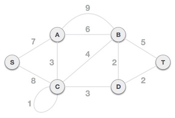
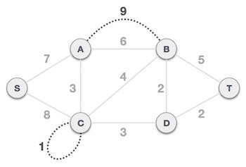
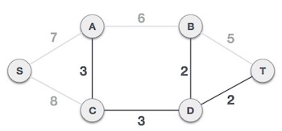

Kruskal's algorithm to find minimum cost spanning tree uses greedy approach. This algorithm treats the graph as a forest and every node it as an individual tree. A tree connects to another only and only if it has least cost among all available options and does not violate MST properties.
To understand Kruskal's algorithm we shall take the following example −
Remove all loops and parallel edges from the given graph.
In case of parallel edges, keep the one which has least cost associated and remove all others.

Next step is to create a set of edges & weight and arrange them in ascending order of weightage (cost).

Now we start adding edges to graph beginning from the one which has least weight. At all time, we shall keep checking that the spanning properties are remain intact. In case, by adding one edge, the spanning tree property does not hold then we shall consider not to include the edge in graph.

The least cost is 2 and edges involved are B,D and D,T so we add them. Adding them does not violate spanning tree properties so we continue to our next edge selection.
Next cost is 3, and associated edges are A,C and C,D. So we add them −

Next cost in the table is 4, and we observe that adding it will create a circuit in the graph −
...and we ignore it. And in the process we shall ignore/avoid all edges which create circuit.
We observe that edges with cost 5 and 6 also create circuits and we ignore them and move on.

Now we are left with only one node to be added. Between two least cost edges available 7, 8 we shall add the edge with cost 7.

By adding edge S,A we have included all the nodes of the graph and we have minimum cost spanning tree.